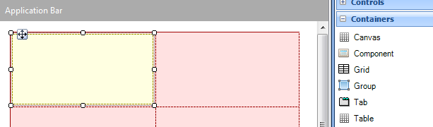
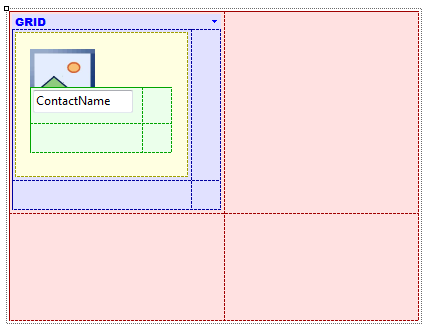
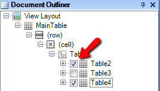

There are two possible ways to design layouts for Smart Devices, in addition to several controls. Some of these controls can contain other controls; for example, Table control. When using tables we can place only one control in each cell, and the desired position is achieved by changing the size of the columns and rows of that table, as well as the control's alignment. These controls use relative positioning. Another way is by using the Canvas control. The Canvas container allows you to accurately order the elements in the layout by using absolute positioning, which allows you to overlay them. LayoutThe canvas container can be added from the toolbox to any SD layout, and it looks as shown below:  Container propertiesThe canvas container has the same properties as a table, in addition to the properties Canvas width (canvas width measured in dips) and Canvas height (canvas height measured in dips). The canvas width and height depend on the canvas size in the designer; in the device, the canvas will take the size of its container (for example, when it is in a table it will take the size of the cell it is saved in). Properties of the elements in the containerThe controls placed within a canvas have seven new properties:
Notes1) If the control is not anchored to an axis, its position is calculated in percentages. For example, an image is added that isn’t anchored to the right nor to the left, positioned at X = 50 in a canvas that is 100dips wide; this image will always be positioned at 50% of the canvas. 2) If the control is anchored to both sides of an axis, the distance between the control and both sides will remain constant and the size of the control will vary. 3) The values for the Left, Right, Top and Bottom properties may be negative numbers. This means that the control will be moved in the opposite direction. For examble, if we set a Top value of -20 dips for an image with height 100 dips, only the lower 80 dips of the image will be visible. Setting negative values is useful when you want to animate a control, for example to make it appear on screen by performing a user action. This can be achived by setting a theme class to the control that has the Animated property set to True and a transformation to move the control to another possition. ExampleIn the example below, the canvas container is used to position the contacts’ names over the photos.  LightCRM App: Absolute Positioning an Overlaying in actionTipWhen using the canvas container, it can be very useful to hide the controls during the layout design. This can be done from the Document Outliner, using the checkbox next to each control:  See alsoHowTo: Overlay attributes
|